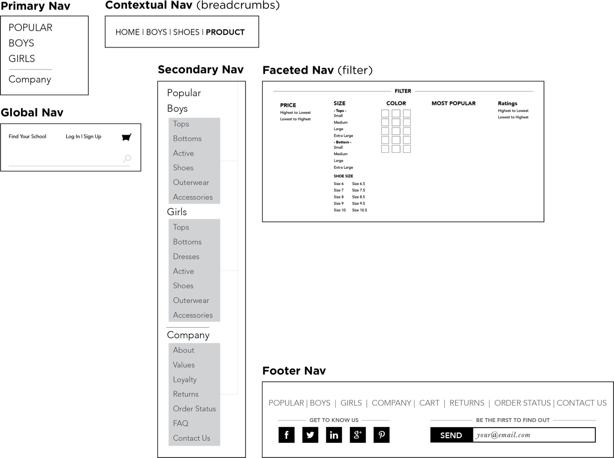

<!DOCTYPE html>
<html class="no-js" lang="">
<head>
    <meta charset="utf-8">
    <meta http-equiv="x-ua-compatible" content="ie=edge">
    <title>Lunarian.co | Southern Bells</title>
    <meta name="description" content="Sam Gensburg - Product Designer">
    <meta name="keywords" content="Sam, Gensburg, design, portfolio">
    <meta name="author" content="Sam Gensburg">
    <meta name="viewport" content="width=device-width, initial-scale=1.0">

    <link rel="manifest" href="site.webmanifest">
    <link rel="apple-touch-icon" href="icon.png">
    <!-- Place favicon.ico in the root directory -->

    <script
        src="https://code.jquery.com/jquery-3.2.1.min.js"
        integrity="sha256-hwg4gsxgFZhOsEEamdOYGBf13FyQuiTwlAQgxVSNgt4="
        crossorigin="anonymous">
    </script>
    <link rel="stylesheet" href="../../css/normalize.css">
    <link rel="stylesheet" href="../../css/main.css">
    <link rel="stylesheet" href="../project-template.css">
    <link rel="stylesheet" href="frenchtoast.css">
</head>
<body>

<header id="header">
    <div id="logo"><a href="../../index.html"></a></div>
</header>

<section class="headline">
    <h1>French Toast</h1>
    <h2>E-COMMERCE WEBSITE</h2>
</section>

<div class="content">
    <section class="column__container column__one">
        <p><b>THE CLIENT:</b> </p>

        <p><b>ABOUT:</b> French Toast is a company that sells school uniforms for K-12. They partner with schools to coordinate a selection of garments to meet each dress & uniform code requirements. They were interested in a site redesign that would work well both for those browsing the entire site, but also parents who were sent an email checklist of specific types of clothes.</p>

        <p><b>ROLE:</b> UXA</p>

        <p><b>METHODS USED</b> Heuristic evaluation, card sorting, site map, user flows, sketching, prototyping, wireframing, and usability testing.</p>
    </section>

    <h3>OVERVIEW</h3>

    <section class="column__container column column__one">
            
    </section>

    <h3>RESEARCH AND FINDINGS</h3>

    <section class="column__container column__one">
        <p><b>PERSONAS:</b> The bulk of French Toast users are parents with various nuances. I was given a few personas that demonstrated French Toasts typical users. With that information, my surveys, and interviews, and synthesis I uncovered insights:</p>

        <p>1) Users view this type of experience as a task rather than pleasurable.</p>

        <p>2) Users want things to be effortless (no barriers).</p>

        <p>3) Users want to get things done FAST!</p>
    </section>

    <section class="column__container column__one no-header column">
        
        <p><b>CARD SORTING:</b> I asked for a list of all the products to be sold on the True Spirit site and began card sorting with users. This was beneficial both for the categorization of products and creating my site map.</p>
    </section>

    <h3>GO WITH THE FLOW</h3>

    <section class="column__container column__two">
        <section class="column column--left">
            <p><b>SITEMAP:</b> For ease of searching and loading new pages home page/product gallery is a single scrolling page. Now users can casually view everything at once or filter their search through the side navigation.</p>
        </section>

        <section class="column column--right">
            
        </section>
    </section>

    <section class="column__container column__two no-header">
        <section class="column column--left">
            
        </section>

        <section class="column column--right">
            <p><b>HOMEPAGE:</b> Many of the schools will send emails to parents with link(s) to specific garments that fit their dress code. Those who click on a school link will be taken to a curated landing page that only shows the products deemed acceptable by the school. For ease of searching and less loading of pages I made the product gallery a single page.</p>
            
        </section>
    </section>

    <section class="column__container column__two no-header">
        <section class="column column--left">
            
        </section>

        <section class="column column--right">
            <p><b>PRODUCT PAGE:</b> I wanted to limit the steps between finding a product and buying it. In doing this I made the site simpler with less opportunities to get lost. I endeavored to make the entire site a 3-step process.</p>
            <p>1. Find product(s)<br>
            2. Select size & color<br>
            3. Checkout</p>
            
        </section>
    </section>

    <section class="column__container column__two no-header">
        <section class="column column--left">
            
        </section>

        <section class="column column--right">
            <p><b>CHECKOUT PROCESS</b></p>
            
        </section>
    </section>

    <section class="column__container column column__one no-header">
        <p><b>NAVIGATION:</b> Making minimal site with various routes requires an appropriate level of navigation.</p>
    </section>

    <section class="column__container column column__one no-header">
        
    </section>

    <section class="column__container column__two no-header">
        <section class="column column--left">
            
        </section>

        <section class="column column--right">
            <p><b>ACCOUNTS:</b> My audience are young parents, busy parents who, in interviews, mentioned not wanting more accounts to manage. I was curious what social platforms were most common amongst the users. Most everyone I surveyed had either a Facebook or Gmail account. With that, implemented an option to use an existing Gmail or Facebook account instead of creating a new unique account. This worked well in User Testing.</p>
        </section>
    </section>


    <h3>Next Steps</h3>

    <section class="column__container column column__one">
        <ul class="nextsteps">
            <li>Usability testing with users</li>
            <li>Look into mobile web</li>
            <li>Add UI</li>
        </ul>
    </section>

</body>
</html>
